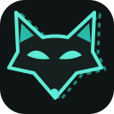

CODEX_HOMEzorua add work · zorua use work
$ zorua version → Zorua 0.6.0
Many accounts.
One terminal each.
Zorua is a small shell layer for Codex CLI and Claude Code. A terminal's setup is four environment variables, so changing one terminal never touches another. zsh, bash and fish. No daemon, no proxy.
curl -fsSL https://raw.githubusercontent.com/szupzj18/zorua/main/install.sh | shgithub.com/szupzj18/zorua · llms.txt (for agents)
the four slots of a terminal
Pick a scenario. The slots below show what this shell holds after the commands run.
$ zorua use work this shell -> codex account: work $ zorua use alt this shell -> claude account: alt
$ zorua use ds # plain `codex` runs on deepseek $ zorua use kimi # plain `claude` runs on kimi, same shell
$ zorua use work # codex account $ zorua use kimi # claude provider two different slots; neither replaces the other
$ zorua off providers cleared the providers; accounts (CODEX_HOME, CLAUDE_CONFIG_DIR) kept $ zorua off cleared CODEX_HOME, CLAUDE_CONFIG_DIR and the providers; back to defaults
account (a subscription login)
provider (a third-party endpoint)
Codex CLI
ZORUA_CODEX_PROVIDERzorua provider add ds --codex … · zorua use dsClaude Code
CLAUDE_CONFIG_DIRzorua add --claude alt · zorua use altZORUA_CLAUDE_PROVIDERzorua provider add kimi … · zorua use kimiEach slot holds one value per terminal. zorua use fills one slot and leaves the others alone.
commands
| command | what it does |
|---|---|
| zorua add [--claude] <name> | new account directory and sign-in |
| zorua use <name> | use - | fill a slot in this shell | clear everything |
| zorua <name> [args] | one-shot run; stale ANTHROPIC_* variables are cleaned for the run |
| zorua bind [name] | this directory switches automatically on cd |
| zorua usage [-v] | 5h / 7d limits per account |
| zorua provider add|models|import | manage endpoints, their models, and import from cc-switch |
| zorua off providers main | clear the provider slots, keep the accounts |
| zorua off | clear all four slots |
defaults for new Claude accounts main
$ cat ~/.config/zorua/claude-settings.json { "env": { "HTTPS_PROXY": "http://127.0.0.1:7897", "NO_PROXY": "localhost,127.0.0.1" } } $ zorua add --claude second # settings.json starts from the template
Copied only when the new account has no settings.json yet; an existing one is never overwritten.
usage board
$ zorua usage Codex NAME PLAN 5H 7D RESET ● default pro – ▓░░░░░ 6% 4d9h side team ░░░░░░ 0% ▓▓░░░░ 26% 1d15h Claude Code NAME PLAN 5H 7D RESET alt max ▓▓▓░░░ 42% ▓░░░░░ 7% 4d9h